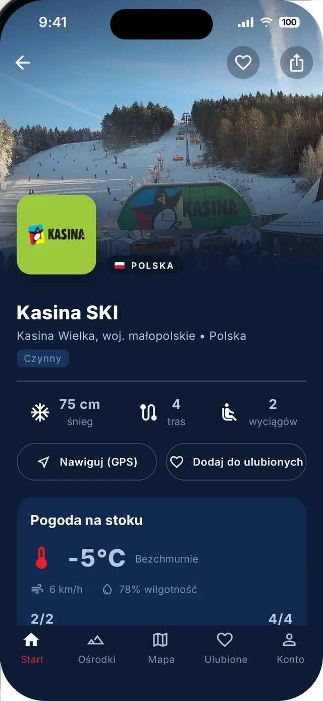

Warunki na żywo
Grubość pokrywy śnieżnej, liczba tras i wyciągów oraz status ośrodka na jednej karcie. Trasy mają opisany poziom trudności, więc łatwo wybierzesz stok dla początkujących albo dla zaawansowanych.
- śnieg na stoku w centymetrach
- trasy i wyciągi oraz ile z nich jest czynnych
- przycisk „Nawiguj (GPS)” prowadzi prosto do ośrodka
- ulubione ośrodki zawsze pod ręką
